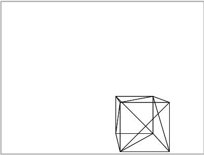
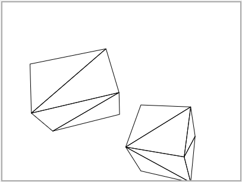
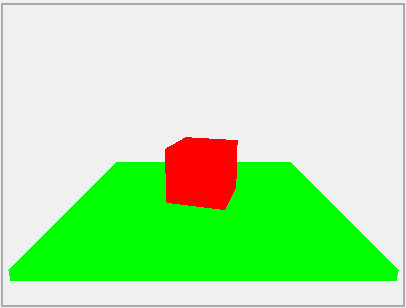
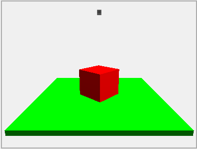
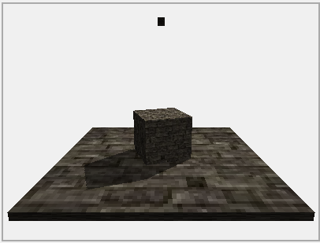
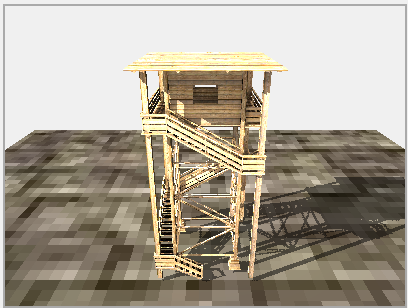

Cách làm một Graphics Engine 3D bằng thuần HTML Canvas và Javascript
Bạn là một Game Developer đã sử dụng một Game engine như Unity, Unreal Engine, Godot để làm một vài dự án game? Bạn đã tìm hiểu và sử dụng thử các thư viện đồ họa như OpenGL, Vulkan. Và bạn đang muốn tìm hiểu sâu thêm về cách đồ họa 3D thật sự được render như thế nào, đây chính là series mà bạn đang tìm!Mục tiêu của series này là cùng bạn xây dựng được một 3D graphics engine với thuần HTML Canvas, Javascript, không có một thư viện third-party nào, chỉ có ALGORITHM và MATH.
Mình sẽ over explain lại mọi thứ theo kiểu "explain to me like I'm five" và guided discovery (như mấy video của 3Blue1Brown), có luôn full code + chạy thử ở mọi step để bạn có thể hình dung được tốt nhất.
Những kiến thức mình nói tới ở series này sẽ bắt nguồn từ nhiều nơi khác nhau, đầu tiên là từ 4 videos Code-It-Yourself! 3D Graphics Engine của javidx9 (OneLoneCoder) (tuy nhiên mình thấy javidx9 giải thích mơ hồ và thậm chí thiếu và sai khá nhiều thứ). Ngoài ra còn có Blog của lisyarus để giải thích Quaternion.
Các blog trong series:

Graphics Engine 3D #1: Những khái niệm cần biết và setup cơ bản

Graphics Engine 3D #2: Vẽ một hình lập phương

Graphics Engine 3D #3: Projection matrix

Graphics Engine 3D #4: Model matrix

Graphics Engine 3D #5: Game loop và face culling

Graphics Engine 3D #6: Quaternion

Graphics Engine 3D #7: View matrix và Clipping

Graphics Engine 3D #8: Software Rasterizer và Depth buffer

Graphics Engine 3D #9: Lighting

Graphics Engine 3D #10: Texture Sampling

Graphics Engine 3D #11: Shadow Mapping

Graphics Engine 3D #12: Cách import file Obj và Demo tổng kết